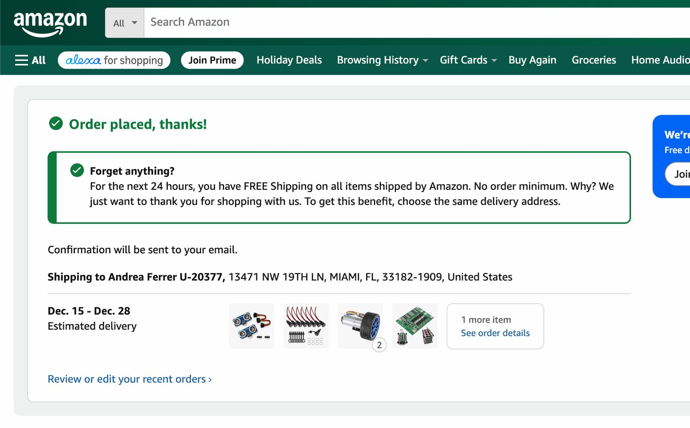

Un robot móvil autónomo de telecomunicaciones diseñado para buscar, clasificar y transportar componentes y herramientas dentro del laboratorio de la universidad. Aquí documentamos nuestra arquitectura, el firmware en ESP32, los simuladores físicos 3D interactivos y la preparación de las pruebas experimentales.
Estado Actual del Proyecto
Así se distribuye el avance de la tesis entre la validación por simulación matemática y la implementación física en laboratorio.
Simuladores 3D y Firmware
Modelado cinemático, protocolos y algoritmos completamente simulados con Three.js y probados en código real de microcontrolador.
-
P01 (MQTT & Telemetría): 0 órdenes perdidas en 50 pedidos; desconexión por LWT probada en 22 s.
-
P03 (Tracción & Encoders): Control PWM a 20 kHz e interrupciones de hardware simuladas con batería 3S.
-
P08 (Seguidor de Línea): Algoritmo PD a 100 Hz sobre cinta negra y piso de granito simulado a 0,41 m/s.
-
Firmware ESP32 Integrado: Los 3 prototipos fusionados en un solo `.ino` compilable (71% Flash, 15% RAM).
Validación en Laboratorio
Ensayos empíricos con el robot físico en las instalaciones del laboratorio de telecomunicaciones de la UCAB.
-
Pedido de materiales: motores JGA25-371, ESP32, BMS, puerto de carga y ultrasónicos pedidos el 16/11 en Amazon. Llegan a Miami entre el 15 y el 28 de diciembre.
-
Calibración de Sensores: Medición del coeficiente de reflexión real del piso de granito vs cinta aislante del lab.
-
Pruebas de Repetibilidad: Protocolo experimental de 20+ repeticiones para verificar desvío milimétrico y autonomía.
-
Prueba de Cobertura H0: Verificación de conexión Wi-Fi institucional de la UCAB con broker MQTT local.

Evidencia: confirmación de Amazon, 16/11/2026 · entrega estimada 15–28 dic en Miami.
En qué semana vamos
Ver cronograma completo (32 semanas) →De un vistazo
Próximo hito
Qué toca en esta fase
Próxima prueba · 18 nov
Los 3 Prototipos
Cada prototipo cuenta con su propio simulador 3D interactivo en Three.js y el código Arduino (.ino) listo para programar en el ESP32.
Firmware Integrado (P01 + P03 + P08)
Los tres subsistemas ya están consolidados en un único archivo fuente para el ESP32. Compilación exitosa: 71 % de memoria Flash y 15 % de RAM.
Un solo código · Modo autónomo y manual
- Navegación Óptica (P08): Lazo de control PD a 100 Hz con cálculo de error ponderado sobre 4 sensores infrarrojos.
- Telemetría MQTT (P01): Publica estado cada 2 s, procesa órdenes con QoS 1/2 y avisa corte de conexión mediante LWT.
- Actuadores y Odometría (P03): Señales PWM a 20 kHz sin silbido audible y conteo de pulsos por interrupciones de hardware.
- Fail-safe de Seguridad: Si en modo manual se pierden las órdenes por más de 5 s, retorna automáticamente a modo autónomo.
- Protección de Batería: Monitoreo continuo del paquete Li-Ion 3S con alerta de desconexión por debajo de 9,9 V.
- Arquitectura No Bloqueante: Cero llamadas a
delay(); temporización estricta por marcas de tiempo conmillis().
Para estos días
Tareas prioritarias del equipo. En rojo, aquellas que requieren seguimiento urgente.
Último avance registrado
Explora la Documentación
📅 Cronograma
Las 32 semanas y las 7 fases en una línea de tiempo interactiva.
🧪 Prototipos
Catálogo de pruebas, simuladores y evidencias de laboratorio.
📋 Requerimientos
Qué debe hacer el robot y la matriz de validación asociada.
⚙️ Hardware
Lista de materiales (BOM), piezas y estado de compra.
🏗️ Arquitectura
Diagrama de bloques, tópicos MQTT y flujo de señales.
💡 Decisiones
Criterios de ingeniería: por qué elegimos cada tecnología.
📖 Bitácora
Registro semanal detallado del trabajo realizado.
🧪 Guía de pruebas
Protocolo del laboratorio del 18/11: Wi-Fi y MQTT, latencia y calibración del PD.
🔌 Checklist de hardware
Seguridad eléctrica, pull-down de 10 kΩ y tabla de conexiones del ESP32.
📡 Guía MQTTX
Tópicos del robot, payloads listos para copiar y prueba de humo de 7 pasos.